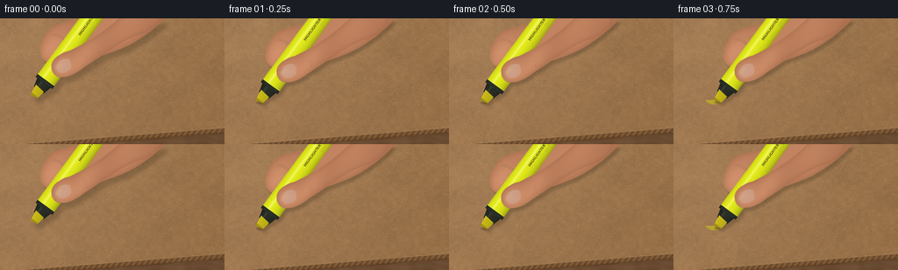
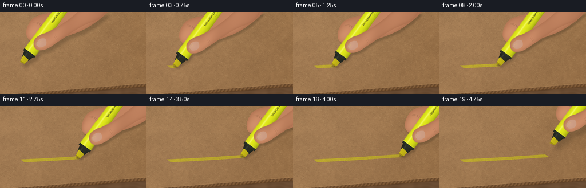

CODING AGENTS AS PIXEL WORLD MODELS
traex/GPT-6.1-Sol · phygen_034
点击播放 · 原生 RGB 像素
逐轮保存的候选
回放视频、检查图与代码变化。
每份候选均可单独播放。实际图片检查记录在下方工具轨迹中。
候选 01播放与检查图
点击播放 · 原生 RGB 像素


展开代码变化
--- 上一保存版本
+++ 本次保存版本
@@ -0,0 +1,238 @@
+from pathlib import Path
+import json
+import numpy as np
+from PIL import Image, ImageDraw, ImageFilter, ImageFont
+import artifact_io
+
+ROOT=Path(__file__).resolve().parent
+SPEC=json.loads((ROOT/'task_spec.json').read_text())
+W,H=SPEC['width'],SPEC['height']; S=4
+WW,HH=W*S,H*S
+rng=np.random.default_rng(34)
+Y,X=np.mgrid[0:HH,0:WW].astype(float); X/=S; Y/=S
+
+def noise(w,h,scale):
+ a=rng.uniform(0,255,(max(2,int(h/scale)),max(2,int(w/scale)))).astype('uint8')
+ return np.asarray(Image.fromarray(a).resize((w,h),Image.Resampling.BICUBIC),float)/255-.5
+
+# Stable multiscale paper topography, with real-sized plant fibres.
+coarse=noise(WW,HH,95); medium=noise(WW,HH,17); fine=noise(WW,HH,3)
+grains=rng.normal(0,1,(HH,WW))
+relief=4.2*coarse+3.9*medium+2.9*fine+1.1*grains
+illum=7*np.exp(-((X-66)/160)**2-((Y-38)/130)**2)-.031*X-.014*Y
+paper=np.clip(np.stack([158+illum+relief*1.8,119+illum+relief*1.52,79+illum+relief*1.13],-1),0,255).astype('uint8')
+paper_im=Image.fromarray(paper)
+fib=Image.new('RGBA',(WW,HH)); fd=ImageDraw.Draw(fib)
+for _ in range(12800):
+ x=rng.uniform(-2,W+2)*S; y=rng.uniform(-2,H+2)*S
+ length=rng.uniform(.25,2.7)*S; angle=rng.normal(-.13,.63)
+ dx=np.cos(angle)*length; dy=np.sin(angle)*length
+ if rng.random()<.58: col=(82,56,33,int(rng.uniform(15,48)))
+ else: col=(221,192,141,int(rng.uniform(20,63)))
+ fd.line((x,y,x+dx,y+dy),fill=col,width=int(rng.choice([1,1,1,2])))
+for _ in range(1100):
+ x=rng.uniform(0,WW); y=rng.uniform(0,HH); r=rng.uniform(.25,.7)*S
+ fd.ellipse((x,y,x+r,y+r*.6), fill=(64,44,28,int(rng.uniform(24,66))))
+paper_im=Image.alpha_composite(paper_im.convert('RGBA'),fib).convert('RGB')
+paper=np.asarray(paper_im).astype(float)
+# A visible, slightly diagonal exposed corrugated lower edge establishes cardboard.
+edge=146-.080*X
+boardmask=Y<edge
+woodnoise=noise(WW,HH,30)
+desk=np.stack([107+woodnoise*11,77+woodnoise*9,51+woodnoise*7],-1)
+desk+=np.sin(Y*.85+noise(WW,HH,55)*6)[...,None]*2
+base=np.where(boardmask[...,None],paper,desk)
+thick=(Y>=edge)&(Y<edge+5)
+flutes=(np.sin((X+.7*Y)*1.02)+1)/2
+edgecol=np.stack([103+flutes*29,72+flutes*23,43+flutes*17],-1)
+base=np.where(thick[...,None],edgecol,base)
+edgehighlight=np.exp(-((Y-edge+.30)/.3)**2)
+base+=edgehighlight[...,None]*np.array([12,10,7])
+base-=np.exp(-((Y-edge-5)/1.5)**2)[...,None]*10
+base=np.clip(base,0,255)
+
+# Instrument and hand are built in their own coordinate system. u is the
+# barrel axis, v the cross-axis; the contact edge is u=0.
+LW,LH=210*S,160*S; OX,OY=16*S,60*S
+V,U=np.mgrid[0:LH,0:LW].astype(float); U=(U-OX)/S; V=(V-OY)/S
+
+def poly_mask(points):
+ m=Image.new('L',(LW,LH)); d=ImageDraw.Draw(m)
+ d.polygon([(OX+u*S,OY+v*S) for u,v in points],fill=255)
+ return m
+
+def curves(start,segments):
+ pts=[start]; p=np.array(start,float)
+ for b,c,e in segments:
+ b=np.array(b,float); c=np.array(c,float); e=np.array(e,float)
+ for t in np.linspace(0,1,25)[1:]:
+ q=(1-t)**3*p+3*(1-t)**2*t*b+3*(1-t)*t*t*c+t**3*e
+ pts.append(tuple(q))
+ p=e
+ return pts
+
+def skin(mask,bulges):
+ m=np.asarray(mask,float)/255
+ smooth=np.asarray(mask.filter(ImageFilter.GaussianBlur(3*S)),float)/255
+ val=-23*(1-smooth)
+ for u,v,a,b,amp in bulges:
+ val+=amp*np.exp(-((U-u)/a)**2-((V-v)/b)**2)
+ val+=-V*.075+rng.normal(0,.65,(LH,LW))
+ a=np.zeros((LH,LW,4),dtype='uint8')
+ a[:,:,:3]=np.clip(np.stack([184+val,123+val*.85,89+val*.73],-1),0,255)
+ a[:,:,3]=np.asarray(mask)
+ return Image.fromarray(a)
+
+def line_local(im,points,color,width):
+ ImageDraw.Draw(im).line([(OX+u*S,OY+v*S) for u,v in points],fill=color,width=max(1,int(width*S)),joint='curve')
+
+rear_pts=curves((42,-11),[
+ ((39,-20),(48,-29),(63,-31)),
+ ((76,-33),(82,-29),(98,-15)),
+ ((111,-5),(140,6),(179,13)),
+ ((190,25),(197,57),(184,70)),
+ ((157,70),(122,61),(99,45)),
+ ((78,32),(62,16),(52,2)),
+ ((46,-2),(41,-6),(42,-11))])
+rear_m=poly_mask(rear_pts)
+rear=skin(rear_m,[(58,-16,21,12,24),(124,32,35,27,15),(95,6,22,16,7)])
+# Short creases at the bent index knuckle, subdued rather than outlined.
+for off in [0,2.0]:
+ ps=curves((69+off,-26),[((74+off,-20),(74+off,-11),(70+off,-4))])
+ line_local(rear,ps,(125,77,55,145),.32)
+
+marker=np.zeros((LH,LW,4),np.uint8)
+body=(U>=22)&(U<=139)&(np.abs(V)<(11.7-.009*(U-22)))
+# Rounded end-cap.
+body|=(((U-139)/6.8)**2+(V/10.6)**2<=1)&(U>139)
+r=11.7-.009*(U-22)
+vv=V/np.maximum(r,1)
+shade=.70+.27*np.sqrt(np.clip(1-vv*vv,0,1))-.095*vv
+bcol=np.stack([231*shade,239*shade,27*shade],-1)
+shine=np.exp(-((V+4.0)/1.45)**2)*.50
+bcol=bcol*(1-shine[...,None])+np.array([255,255,158])*shine[...,None]
+marker[body,:3]=np.clip(bcol[body],0,255); marker[body,3]=255
+neck=(U>=10)&(U<23)&(np.abs(V)<(6.9+(U-10)*.27))
+neckshade=19+26*np.sqrt(np.clip(1-(V/11)**2,0,1))+np.exp(-((V+3)/1.2)**2)*18
+nc=np.stack([neckshade*.92,neckshade,neckshade*.82],-1)
+marker[neck,:3]=nc[neck].astype('uint8'); marker[neck,3]=255
+# Narrow molded collar with subtle reflective edges.
+collar=(U>=20)&(U<24)&(np.abs(V)<11.9)
+cc=35+14*np.sqrt(np.clip(1-(V/12)**2,0,1))
+marker[collar,:3]=np.stack([cc*.87,cc,cc*.81],-1)[collar].astype('uint8'); marker[collar,3]=255
+nibmask=np.asarray(poly_mask([(0,-4.5),(1.8,4.7),(11.7,6.1),(13,-6.1)]))>0
+nibtex=rng.normal(0,4,(LH,LW))+2*np.sin(V*17)
+nibcol=np.stack([194+nibtex-V*2,179+nibtex-V*2.0,23+nibtex*.32],-1)
+marker[nibmask,:3]=np.clip(nibcol[nibmask],0,255).astype('uint8'); marker[nibmask,3]=255
+face=nibmask&(U<2.8)
+marker[face,:3]=np.clip(np.stack([160+nibtex,144+nibtex,20+nibtex*.25],-1)[face],0,255).astype('uint8')
+marker=Image.fromarray(marker)
+line_local(marker,[(25,-10.9),(25,10.9)],(236,245,100,220),.45)
+line_local(marker,[(136,-9.9),(136,9.9)],(122,141,13,210),.35)
+# Restrained printed identification on the exposed top barrel.
+font=ImageFont.truetype('/usr/share/fonts/truetype/dejavu/DejaVuSans-Bold.ttf',4*S)
+d=ImageDraw.Draw(marker)
+d.text((OX+88*S,OY-2*S),'HIGHLIGHTER',font=font,fill=(65,76,23,210))
+for u in [113,115,117,119,121,124]:
+ line_local(marker,[(u,4),(u,7)],(92,104,21,140),.26)
+
+thumb_pts=curves((38,13),[
+ ((33,9),(34,1),(40,-4)),
+ ((47,-9),(57,-6),(67,2)),
+ ((84,12),(110,22),(138,27)),
+ ((155,29),(167,42),(174,59)),
+ ((161,69),(145,67),(130,56)),
+ ((110,42),(82,35),(63,27)),
+ ((49,23),(41,18),(38,13))])
+thumb_m=poly_mask(thumb_pts)
+thumb=skin(thumb_m,[(46,6,14,11,27),(69,19,25,10,20),(132,38,34,19,11)])
+# Nail bed, subtle cuticle rim, and a single satin reflection.
+nail_pts=curves((40,5),[
+ ((39,0),(43,-2),(48,-1)),
+ ((54,0),(57,3),(59,7)),
+ ((58,11),(54,15),(50,15)),
+ ((44,13),(40,10),(40,5))])
+nm=poly_mask(nail_pts); na=np.asarray(nm,float)/255
+ns=3*np.sin(U*.15)+7*np.exp(-((U-45)/7)**2-((V-5)/5)**2)
+nail=np.zeros((LH,LW,4),np.uint8)
+nail[:,:,:3]=np.clip(np.stack([201+ns,153+ns,128+ns],-1),0,255); nail[:,:,3]=(na*250).astype('uint8')
+thumb=Image.alpha_composite(thumb,Image.fromarray(nail))
+line_local(thumb,curves((40.4,5),[((40,0),(44,-1.5),(48,-.5))]),(146,96,76,190),.32)
+line_local(thumb,curves((42,4),[((43,2),(46,2),(50,3.5))]),(232,190,165,155),.45)
+for u in [72,75]:
+ line_local(thumb,curves((u,17),[((u-2,20),(u-2,23),(u-4,25))]),(136,85,61,130),.32)
+
+DX,DY=.59,-.8074
+norm=(DX*DX+DY*DY)**.5; DX/=norm; DY/=norm
+NX,NY=-DY,DX
+
+def warp(im,cx,cy):
+ # Pillow affine maps output coordinates back to object coordinates.
+ return im.transform((WW,HH),Image.Transform.AFFINE,
+ (DX,DY,OX-S*(DX*cx+DY*cy),NX,NY,OY-S*(NX*cx+NY*cy)),Image.Resampling.BICUBIC)
+
+# Every stroke sample is stationary in cardboard coordinates. Rough hollows
+# reject a little ink, and the opaque yellow plastic is distinct from the stain.
+startx=39.0
+endx=188.0
+def path_y(x): return 96-.056*(x-startx)+.40*np.sin((x-startx)/32)
+py=path_y(X)
+# Cross nib edge is diagonal, so convert y distance to a shifted x boundary.
+sw=(Y-py)/NY
+trail_x=X-sw*NX
+rough=noise(WW,HH,3.5)
+fibreholes=(fine<-.35)&(grains<-.10)
+
+frames=[]
+for i in range(SPEC['frames']):
+ if i<2:
+ cx=startx-.8*(1-i); cy=path_y(cx); lift=6.0*(1-i)
+ progress=0
+ elif i<=16:
+ t=(i-2)/14
+ cx=startx+(endx-startx)*(t*.96+.04*(3*t*t-2*t*t*t)); cy=path_y(cx)
+ lift=0; progress=cx
+ else:
+ progress=endx; cx=endx+(i-16)*2.7; cy=path_y(endx)-(i-16)*1.5; lift=(i-16)*5.0
+ img=base.copy()
+ if progress:
+ feather=np.clip((4.55+rough*.45-np.abs(sw))*S,0,1)
+ ink=feather*(trail_x>=startx)*(trail_x<=progress)
+ ink*=.71+rough*.09
+ ink*=np.where(fibreholes,.48,1)
+ # Transparent dye preserves paper shading and its coarse fibres.
+ target=np.stack([196+(paper[:,:,0]-156)*.63,184+(paper[:,:,1]-119)*.60,31+(paper[:,:,2]-78)*.28],-1)
+ img=img*(1-ink[...,None])+target*ink[...,None]
+ # Marginal ink accumulation at contact's outer chisel rails.
+ rail=np.exp(-((np.abs(sw)-4.06)/.30)**2)*(trail_x>=startx)*(trail_x<=progress)
+ img+=rail[...,None]*np.array([1.0,2.4,-2.7])
+ backdrop=Image.fromarray(np.clip(img,0,255).astype('uint8')).convert('RGBA')
+ tx,ty=cx,cy-lift
+ wr=warp(rear,tx,ty); wm=warp(marker,tx,ty); wt=warp(thumb,tx,ty)
+ union=Image.alpha_composite(Image.alpha_composite(wr,wm),wt)
+ # Soft shadows broaden during lifting. The tip contact shadow is tight.
+ sa=union.getchannel('A')
+ sx=2.6+lift*.28; sy=4.0+lift*.36
+ shadow=sa.transform((WW,HH),Image.Transform.AFFINE,(1,0,-sx*S,0,1,-sy*S))
+ shadow=shadow.filter(ImageFilter.GaussianBlur((1.4+lift*.15)*S))
+ shadow.putdata((np.asarray(shadow).astype(float)*.24).astype('uint8').ravel())
+ sh=Image.new('RGBA',(WW,HH),(39,29,16,0)); sh.putalpha(shadow)
+ backdrop=Image.alpha_composite(backdrop,sh)
+ if lift==0:
+ cm=Image.new('RGBA',(WW,HH)); cd=ImageDraw.Draw(cm)
+ cd.ellipse(((cx-3)*S,(cy-.6)*S,(cx+5)*S,(cy+2.1)*S), fill=(73,61,18,83))
+ cm=cm.filter(ImageFilter.GaussianBlur(.4*S))
+ backdrop=Image.alpha_composite(backdrop,cm)
+ backdrop=Image.alpha_composite(backdrop,wr)
+ backdrop=Image.alpha_composite(backdrop,wm)
+ # Thumb casts a small ambient occlusion shadow over the plastic.
+ tas=wt.getchannel('A').filter(ImageFilter.GaussianBlur(.65*S))
+ ma=np.asarray(wm.getchannel('A'),float)/255
+ ta=np.asarray(tas,float)*ma*.22
+ tsh=Image.new('RGBA',(WW,HH),(56,35,17,0)); tsh.putalpha(Image.fromarray(ta.astype('uint8')))
+ backdrop=Image.alpha_composite(backdrop,tsh)
+ backdrop=Image.alpha_composite(backdrop,wt)
+ out=backdrop.convert('RGB').resize((W,H),Image.Resampling.LANCZOS)
+ frames.append(np.asarray(out,dtype=np.uint8))
+artifact_io.save(np.stack(frames),ROOT)
+print('Saved',len(frames),'RGB frames')
可观测工具轨迹
实际执行的命令与返回图片。
命令 1exit 0
/bin/bash -lc 'ls -la && cat prompt.txt && cat GENERATION_RULES.md && cat task_spec.json'
命令 2exit 0
/bin/bash -lc "cat artifact_io.py && python - <<'PY'
import numpy, PIL
print('numpy and PIL available')
PY"命令 3exit 0
/bin/bash -lc 'fc-list | head -8'
命令 4exit 0
/bin/bash -lc "cat > generate.py <<'PY'
from pathlib import Path
import json
import numpy as np
from PIL import Image, ImageDraw, ImageFilter, ImageFont
import artifact_io
ROOT=Path(__file__).resolve().parent
SPEC=json.loads((ROOT/'task_spec.json').read_text())
W,H=SPEC['width'],SPEC['height']; S=4
WW,HH=W*S,H*S
rng=np.random.default_rng(34)
Y,X=np.mgrid[0:HH,0:WW].astype(float); X/=S; Y/=S
def noise(w,h,scale):
a=rng.uniform(0,255,(max(2,int(h/scale)),max(2,int(w/scale)))).astype('uint8')
return np.asarray(Image.fromarray(a).resize((w,h),Image.Resampling.BICUBIC),float)/255-.5
# Stable multiscale paper topography, with real-sized plant fibres.
coarse=noise(WW,HH,95); medium=noise(WW,HH,17); fine=noise(WW,HH,3)
grains=rng.normal(0,1,(HH,WW))
relief=4.2*coarse+3.9*medium+2.9*fine+1.1*grains
illum=7*np.exp(-((X-66)/160)**2-((Y-38)/130)**2)-.031*X-.014*Y
paper=np.clip(np.stack([158+illum+relief*1.8,119+illum+relief*1.52,79+illum+relief*1.13],-1),0,255).astype('uint8')
paper_im=Image.fromarray(paper)
fib=Image.new('RGBA',(WW,HH)); fd=ImageDraw.Draw(fib)
for _ in range(12800):
x=rng.uniform(-2,W+2)*S; y=rng.uniform(-2,H+2)*S
length=rng.uniform(.25,2.7)*S; angle=rng.normal(-.13,.63)
dx=np.cos(angle)*length; dy=np.sin(angle)*length
if rng.random()<.58: col=(82,56,33,int(rng.uniform(15,48)))
else: col=(221,192,141,int(rng.uniform(20,63)))
fd.line((x,y,x+dx,y+dy),fill=col,width=int(rng.choice([1,1,1,2])))
for _ in range(1100):
x=rng.uniform(0,WW); y=rng.uniform(0,HH); r=rng.uniform(.25,.7)*S
fd.ellipse((x,y,x+r,y+r*.6), fill=(64,44,28,int(rng.uniform(24,66))))
paper_im=Image.alpha_composite(paper_im.convert('RGBA'),fib).convert('RGB')
paper=np.asarray(paper_im).astype(float)
# A visible, slightly diagonal exposed corrugated lower edge establishes cardboard.
edge=146-.080*X
boardmask=Y<edge
woodnoise=noise(WW,HH,30)
desk=np.stack([107+woodnoise*11,77+woodnoise*9,51+woodnoise*7],-1)
desk+=np.sin(Y*.85+noise(WW,HH,55)*6)[...,None]*2
base=np.where(boardmask[...,None],paper,desk)
thick=(Y>=edge)&(Y<edge+5)
flutes=(np.sin((X+.7*Y)*1.02)+1)/2
edgecol=np.stack([103+flutes*29,72+flutes*23,43+flutes*17],-1)
base=np.where(thick[...,None],edgecol,base)
edgehighlight=np.exp(-((Y-edge+.30)/.3)**2)
base+=edgehighlight[...,None]*np.array([12,10,7])
base-=np.exp(-((Y-edge-5)/1.5)**2)[...,None]*10
base=np.clip(base,0,255)
# Instrument and hand are built in their own coordinate system. u is the
# barrel axis, v the cross-axis; the contact edge is u=0.
LW,LH=210*S,160*S; OX,OY=16*S,60*S
V,U=np.mgrid[0:LH,0:LW].astype(float); U=(U-OX)/S; V=(V-OY)/S
def poly_mask(points):
m=Image.new('L',(LW,LH)); d=ImageDraw.Draw(m)
d.polygon([(OX+u*S,OY+v*S) for u,v in points],fill=255)
return m
def curves(start,segments):
pts=[start]; p=np.array(start,float)
for b,c,e in segments:
b=np.array(b,float); c=np.array(c,float); e=np.array(e,float)
for t in np.linspace(0,1,25)[1:]:
q=(1-t)**3*p+3*(1-t)**2*t*b+3*(1-t)*t*t*c+t**3*e
pts.append(tuple(q))
p=e
return pts
def skin(mask,bulges):
m=np.asarray(mask,float)/255
smooth=np.asarray(mask.filter(ImageFilter.GaussianBlur(3*S)),float)/255
val=-23*(1-smooth)
for u,v,a,b,amp in bulges:
val+=amp*np.exp(-((U-u)/a)**2-((V-v)/b)**2)
val+=-V*.075+rng.normal(0,.65,(LH,LW))
a=np.zeros((LH,LW,4),dtype='uint8')
a[:,:,:3]=np.clip(np.stack([184+val,123+val*.85,89+val*.73],-1),0,255)
a[:,:,3]=np.asarray(mask)
return Image.fromarray(a)
def line_local(im,points,color,width):
ImageDraw.Draw(im).line([(OX+u*S,OY+v*S) for u,v in points],fill=color,width=max(1,int(width*S)),joint='curve')
rear_pts=curves((42,-11),[
((39,-20),(48,-29),(63,-31)),
((76,-33),(82,-29),(98,-15)),
((111,-5),(140,6),(179,13)),
((190,25),(197,57),(184,70)),
((157,70),(122,61),(99,45)),
((78,32),(62,16),(52,2)),
((46,-2),(41,-6),(42,-11))])
rear_m=poly_mask(rear_pts)
rear=skin(rear_m,[(58,-16,21,12,24),(124,32,35,27,15),(95,6,22,16,7)])
# Short creases at the bent index knuckle, subdued rather than outlined.
for off in [0,2.0]:
ps=curves((69+off,-26),[((74+off,-20),(74+off,-11),(70+off,-4))])
line_local(rear,ps,(125,77,55,145),.32)
marker=np.zeros((LH,LW,4),np.uint8)
body=(U>=22)&(U<=139)&(np.abs(V)<(11.7-.009*(U-22)))
# Rounded end-cap.
body|=(((U-139)/6.8)**2+(V/10.6)**2<=1)&(U>139)
r=11.7-.009*(U-22)
vv=V/np.maximum(r,1)
shade=.70+.27*np.sqrt(np.clip(1-vv*vv,0,1))-.095*vv
bcol=np.stack([231*shade,239*shade,27*shade],-1)
shine=np.exp(-((V+4.0)/1.45)**2)*.50
bcol=bcol*(1-shine[...,None])+np.array([255,255,158])*shine[...,None]
marker[body,:3]=np.clip(bcol[body],0,255); marker[body,3]=255
neck=(U>=10)&(U<23)&(np.abs(V)<(6.9+(U-10)*.27))
neckshade=19+26*np.sqrt(np.clip(1-(V/11)**2,0,1))+np.exp(-((V+3)/1.2)**2)*18
nc=np.stack([neckshade*.92,neckshade,neckshade*.82],-1)
marker[neck,:3]=nc[neck].astype('uint8'); marker[neck,3]=255
# Narrow molded collar with subtle reflective edges.
collar=(U>=20)&(U<24)&(np.abs(V)<11.9)
cc=35+14*np.sqrt(np.clip(1-(V/12)**2,0,1))
marker[collar,:3]=np.stack([cc*.87,cc,cc*.81],-1)[collar].astype('uint8'); marker[collar,3]=255
nibmask=np.asarray(poly_mask([(0,-4.5),(1.8,4.7),(11.7,6.1),(13,-6.1)]))>0
nibtex=rng.normal(0,4,(LH,LW))+2*np.sin(V*17)
nibcol=np.stack([194+nibtex-V*2,179+nibtex-V*2.0,23+nibtex*.32],-1)
marker[nibmask,:3]=np.clip(nibcol[nibmask],0,255).astype('uint8'); marker[nibmask,3]=255
face=nibmask&(U<2.8)
marker[face,:3]=np.clip(np.stack([160+nibtex,144+nibtex,20+nibtex*.25],-1)[face],0,255).astype('uint8')
marker=Image.fromarray(marker)
line_local(marker,[(25,-10.9),(25,10.9)],(236,245,100,220),.45)
line_local(marker,[(136,-9.9),(136,9.9)],(122,141,13,210),.35)
# Restrained printed identification on the exposed top barrel.
font=ImageFont.truetype('/usr/share/fonts/truetype/dejavu/DejaVuSans-Bold.ttf',4*S)
d=ImageDraw.Draw(marker)
d.text((OX+88*S,OY-2*S),'HIGHLIGHTER',font=font,fill=(65,76,23,210))
for u in [113,115,117,119,121,124]:
line_local(marker,[(u,4),(u,7)],(92,104,21,140),.26)
thumb_pts=curves((38,13),[
((33,9),(34,1),(40,-4)),
((47,-9),(57,-6),(67,2)),
((84,12),(110,22),(138,27)),
((155,29),(167,42),(174,59)),
((161,69),(145,67),(130,56)),
((110,42),(82,35),(63,27)),
((49,23),(41,18),(38,13))])
thumb_m=poly_mask(thumb_pts)
thumb=skin(thumb_m,[(46,6,14,11,27),(69,19,25,10,20),(132,38,34,19,11)])
# Nail bed, subtle cuticle rim, and a single satin reflection.
nail_pts=curves((40,5),[
((39,0),(43,-2),(48,-1)),
((54,0),(57,3),(59,7)),
((58,11),(54,15),(50,15)),
((44,13),(40,10),(40,5))])
nm=poly_mask(nail_pts); na=np.asarray(nm,float)/255
ns=3*np.sin(U*.15)+7*np.exp(-((U-45)/7)**2-((V-5)/5)**2)
nail=np.zeros((LH,LW,4),np.uint8)
nail[:,:,:3]=np.clip(np.stack([201+ns,153+ns,128+ns],-1),0,255); nail[:,:,3]=(na*250).astype('uint8')
thumb=Image.alpha_composite(thumb,Image.fromarray(nail))
line_local(thumb,curves((40.4,5),[((40,0),(44,-1.5),(48,-.5))]),(146,96,76,190),.32)
line_local(thumb,curves((42,4),[((43,2),(46,2),(50,3.5))]),(232,190,165,155),.45)
for u in [72,75]:
line_local(thumb,curves((u,17),[((u-2,20),(u-2,23),(u-4,25))]),(136,85,61,130),.32)
DX,DY=.59,-.8074
norm=(DX*DX+DY*DY)**.5; DX/=norm; DY/=norm
NX,NY=-DY,DX
def warp(im,cx,cy):
# Pillow affine maps output coordinates back to object coordinates.
return im.transform((WW,HH),Image.Transform.AFFINE,
(DX,DY,OX-S*(DX*cx+DY*cy),NX,NY,OY-S*(NX*cx+NY*cy)),Image.Resampling.BICUBIC)
# Every stroke sample is stationary in cardboard coordinates. Rough hollows
# reject a little ink, and the opaque yellow plastic is distinct from the stain.
startx=39.0
endx=188.0
def path_y(x): return 96-.056*(x-startx)+.40*np.sin((x-startx)/32)
py=path_y(X)
# Cross nib edge is diagonal, so convert y distance to a shifted x boundary.
sw=(Y-py)/NY
trail_x=X-sw*NX
rough=noise(WW,HH,3.5)
fibreholes=(fine<-.35)&(grains<-.10)
frames=[]
for i in range(SPEC['frames']):
if i<2:
cx=startx-.8*(1-i); cy=path_y(cx); lift=6.0*(1-i)
progress=0
elif i<=16:
t=(i-2)/14
cx=startx+(endx-startx)*(t*.96+.04*(3*t*t-2*t*t*t)); cy=path_y(cx)
lift=0; progress=cx
else:
progress=endx; cx=endx+(i-16)*2.7; cy=path_y(endx)-(i-16)*1.5; lift=(i-16)*5.0
img=base.copy()
if progress:
feather=np.clip((4.55+rough*.45-np.abs(sw))*S,0,1)
ink=feather*(trail_x>=startx)*(trail_x<=progress)
ink*=.71+rough*.09
ink*=np.where(fibreholes,.48,1)
# Transparent dye preserves paper shading and its coarse fibres.
target=np.stack([196+(paper[:,:,0]-156)*.63,184+(paper[:,:,1]-119)*.60,31+(paper[:,:,2]-78)*.28],-1)
img=img*(1-ink[...,None])+target*ink[...,None]
# Marginal ink accumulation at contact's outer chisel rails.
rail=np.exp(-((np.abs(sw)-4.06)/.30)**2)*(trail_x>=startx)*(trail_x<=progress)
img+=rail[...,None]*np.array([1.0,2.4,-2.7])
backdrop=Image.fromarray(np.clip(img,0,255).astype('uint8')).convert('RGBA')
tx,ty=cx,cy-lift
wr=warp(rear,tx,ty); wm=warp(marker,tx,ty); wt=warp(thumb,tx,ty)
union=Image.alpha_composite(Image.alpha_composite(wr,wm),wt)
# Soft shadows broaden during lifting. The tip contact shadow is tight.
sa=union.getchannel('A')
sx=2.6+lift*.28; sy=4.0+lift*.36
shadow=sa.transform((WW,HH),Image.Transform.AFFINE,(1,0,-sx*S,0,1,-sy*S))
shadow=shadow.filter(ImageFilter.GaussianBlur((1.4+lift*.15)*S))
shadow.putdata((np.asarray(shadow).astype(float)*.24).astype('uint8').ravel())
sh=Image.new('RGBA',(WW,HH),(39,29,16,0)); sh.putalpha(shadow)
backdrop=Image.alpha_composite(backdrop,sh)
if lift==0:
cm=Image.new('RGBA',(WW,HH)); cd=ImageDraw.Draw(cm)
cd.ellipse(((cx-3)*S,(cy-.6)*S,(cx+5)*S,(cy+2.1)*S), fill=(73,61,18,83))
cm=cm.filter(ImageFilter.GaussianBlur(.4*S))
backdrop=Image.alpha_composite(backdrop,cm)
backdrop=Image.alpha_composite(backdrop,wr)
backdrop=Image.alpha_composite(backdrop,wm)
# Thumb casts a small ambient occlusion shadow over the plastic.
tas=wt.getchannel('A').filter(ImageFilter.GaussianBlur(.65*S))
ma=np.asarray(wm.getchannel('A'),float)/255
ta=np.asarray(tas,float)*ma*.22
tsh=Image.new('RGBA',(WW,HH),(56,35,17,0)); tsh.putalpha(Image.fromarray(ta.astype('uint8')))
backdrop=Image.alpha_composite(backdrop,tsh)
backdrop=Image.alpha_composite(backdrop,wt)
out=backdrop.convert('RGB').resize((W,H),Image.Resampling.LANCZOS)
frames.append(np.asarray(out,dtype=np.uint8))
artifact_io.save(np.stack(frames),ROOT)
print('Saved',len(frames),'RGB frames')
PY
python generate.py"命令 5exit 0
/bin/bash -lc "python - <<'PY'
import numpy as np
from pathlib import Path
p=Path('.')
a=np.load(p/'pixels.npz')['pixels']
assert a.shape==(144,256,20)
assert len(list((p/'frames').glob('*.png')))==20
assert (p/'index.html').is_file()
print('Validated: 20 frames, 256Ã144, 4 fps; player and RGB artifacts exist.')
PY"视觉工具实际返回图片 1

保存候选 1 份；完成命令 5 次；可验证图片返回 1 张。原始 API 响应与完整日志保留在本地。